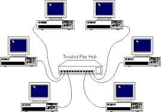

Que es la red WAN
01 de Marzo 2024 Franklin Rdriguez
La red WAN (Wide Area Network o Red de Área Amplia, en español) es un tipo de red de computadoras que cubre un área geográfica extensa, como un país, un continente o incluso a nivel mundial. Su propósito principal es interconectar redes más pequeñas y locales (LAN, o Red de Área Local) para permitir la comunicación y el intercambio de datos entre ellas.
Las redes WAN utilizan diversos medios de transmisión, como cables de fibra óptica, líneas telefónicas, satélites o conexiones inalámbricas. Además, pueden ser gestionadas por organizaciones privadas, proveedores de servicios de Internet (ISP) o incluso a nivel gubernamental para proporcionar servicios de comunicación a gran escala.
Un ejemplo común de una red WAN es Internet, que conecta millones de dispositivos en todo el mundo y permite la comunicación y el intercambio de información a nivel global. Las redes WAN son esenciales para empresas y organizaciones que tienen ubicaciones dispersas geográficamente y necesitan una infraestructura de red para conectar y compartir datos entre sus sucursales.
Evolucion de la red WAN
La evolución de la red WAN (Wide Area Network o Red de Área Amplia) ha sido significativa a lo largo del tiempo. Inicialmente, las redes WAN se establecían principalmente mediante conexiones telefónicas analógicas, lo que limitaba la velocidad y la eficiencia de la comunicación.
Con el avance de la tecnología, la introducción de líneas de datos digitales, como T1 y T3, permitió velocidades de transmisión más rápidas. Posteriormente, la adopción de tecnologías de conmutación de paquetes, como Frame Relay y ATM, mejoró la eficiencia en la transmisión de datos sobre las redes WAN.
En la era moderna, la expansión de las conexiones de banda ancha y la proliferación de tecnologías inalámbricas, como 4G y 5G, han transformado aún más las redes WAN. Estos avances han proporcionado velocidades de transmisión más altas y mayor flexibilidad en la conectividad, facilitando la interconexión de dispositivos y sucursales en todo el mundo.
Además, la adopción de la virtualización de redes y la nube ha revolucionado la forma en que las empresas gestionan y despliegan sus recursos de red. Las soluciones SD-WAN (Software-Defined Wide Area Network) han emergido para ofrecer mayor agilidad, control centralizado y optimización del rendimiento en entornos de red distribuidos.
En resumen, la evolución de la red WAN ha pasado de conexiones telefónicas analógicas a tecnologías de alta velocidad y, finalmente, a soluciones modernas basadas en la nube y la virtualización para satisfacer las demandas cambiantes de conectividad en la era digital.
Hardware de la red WAN
El hardware de la red WAN (Wide Area Network o Red de Área Amplia) ha experimentado una evolución significativa a lo largo del tiempo. En sus primeras etapas, la infraestructura de las redes WAN se basaba en dispositivos como módems y routers que facilitaban la conexión a través de líneas telefónicas analógicas.
Con el avance tecnológico, surgieron dispositivos de red más avanzados, como multiplexores de división de tiempo (TDM) y concentradores, para gestionar y optimizar la transmisión de datos sobre redes WAN. La introducción de tecnologías como Frame Relay y ATM también implicó la adopción de switches y equipos de conmutación de paquetes para mejorar la eficiencia en la transmisión de datos.
En la era actual, el hardware de las redes WAN ha evolucionado para incluir routers de alta velocidad, switches Ethernet, y equipos de optimización de tráfico. La implementación de tecnologías de enrutamiento avanzado y la adopción de dispositivos SD-WAN han llevado a una mayor flexibilidad y gestión centralizada de la red.
Además, la virtualización de funciones de red (NFV) ha permitido la consolidación de funciones que antes requerían hardware dedicado en dispositivos de propósito general. Esto ha llevado a una reducción de la dependencia del hardware físico y a una mayor escalabilidad y agilidad en la gestión de redes WAN.
En resumen, la evolución del hardware de la red WAN ha pasado desde dispositivos básicos de conexión hasta equipos más sofisticados, aprovechando las últimas tecnologías para ofrecer un rendimiento más eficiente y adaptarse a las demandas cambiantes de conectividad en entornos empresariales y globales.